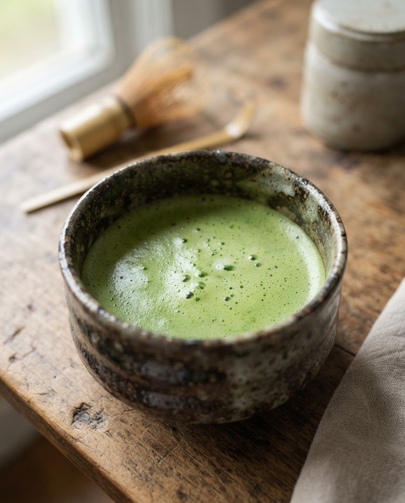
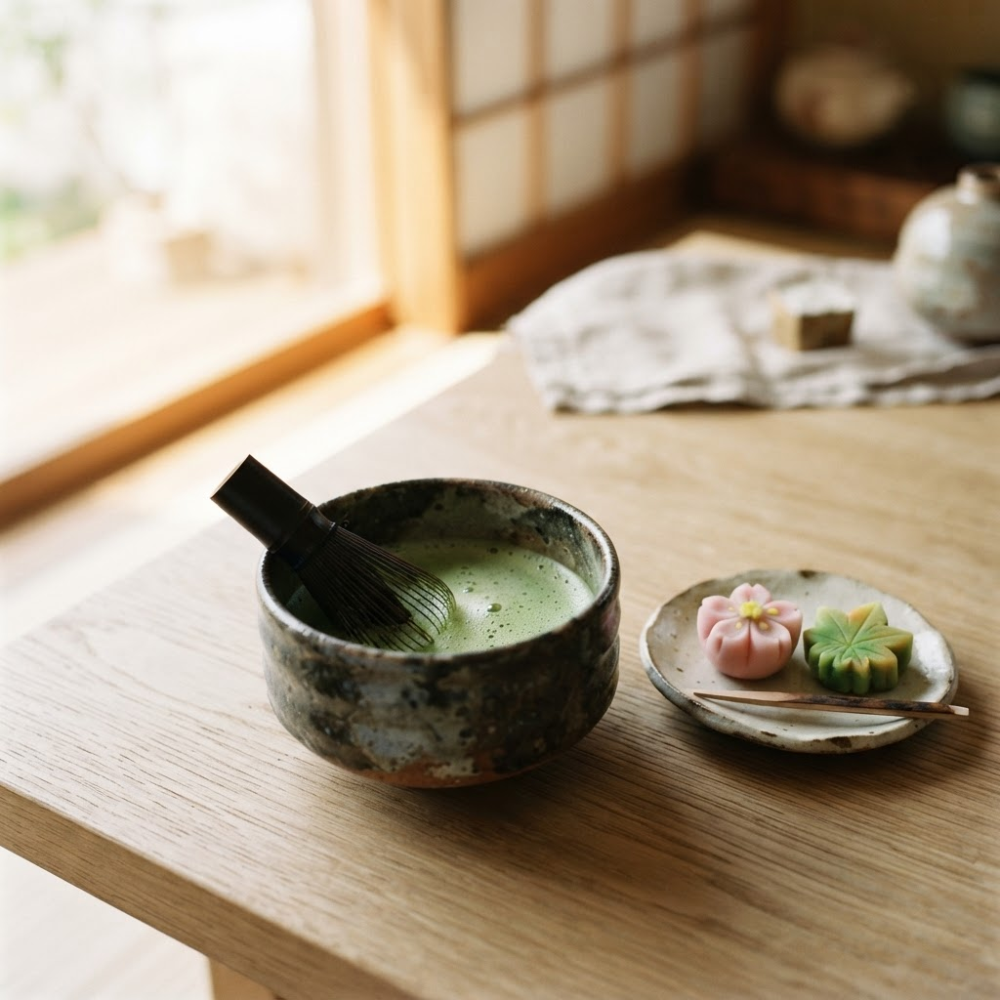
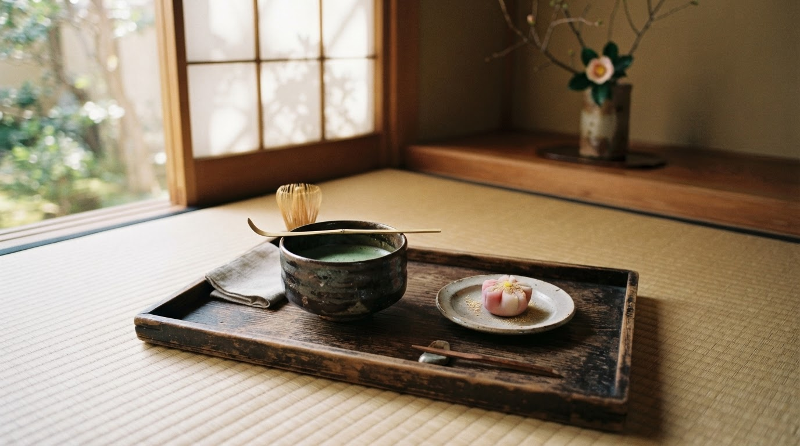
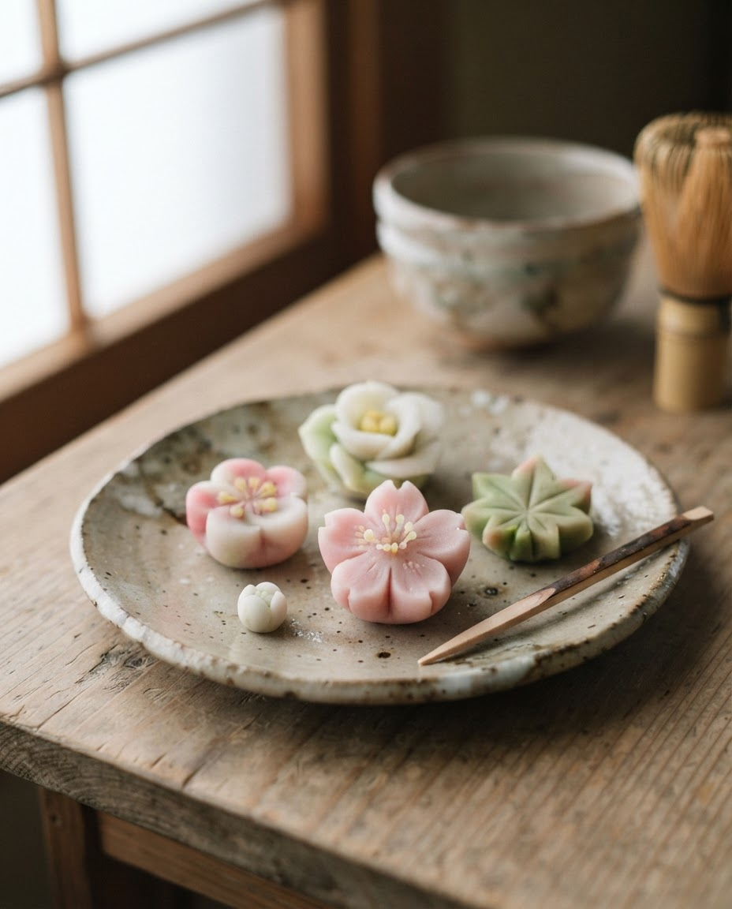
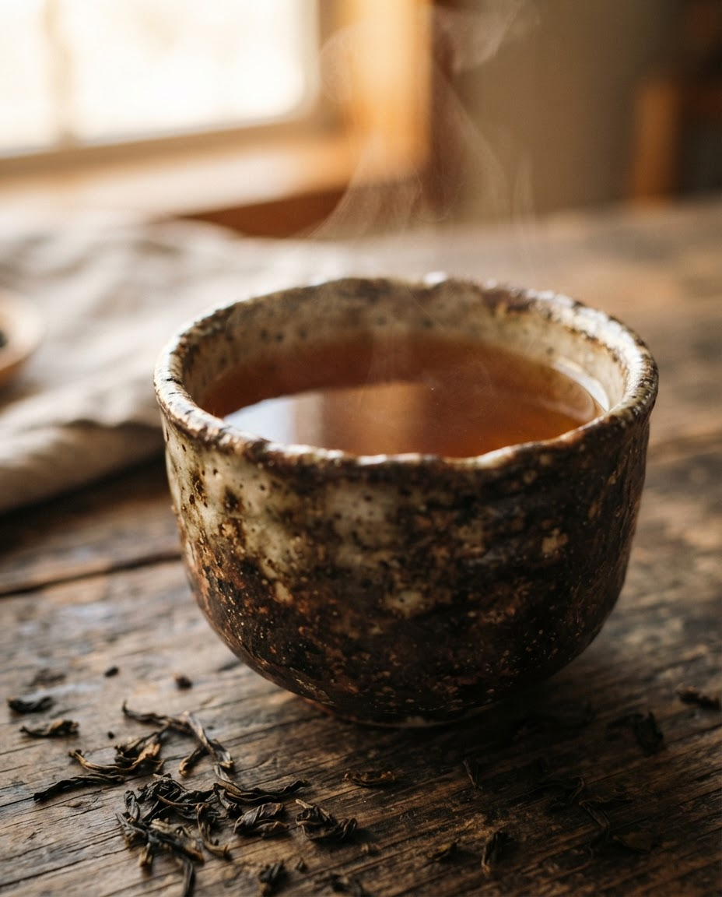
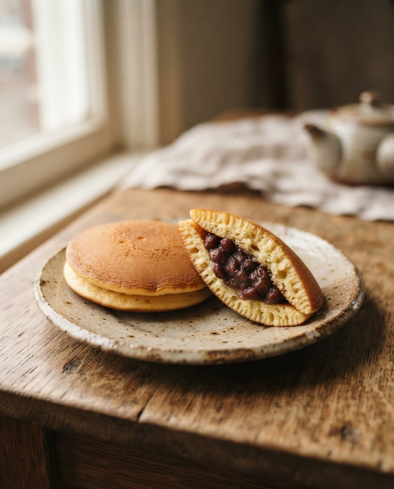
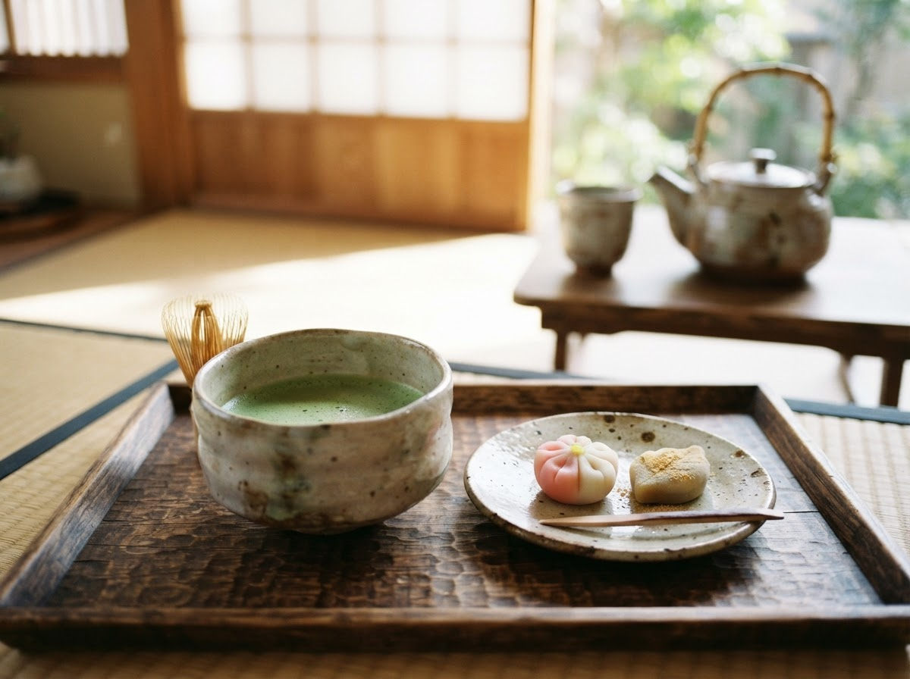
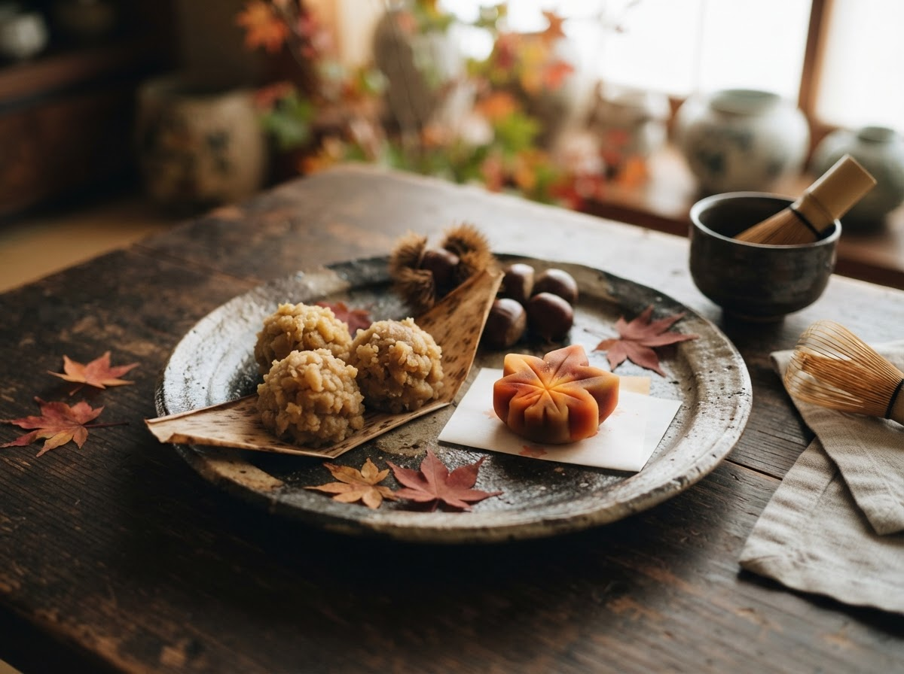
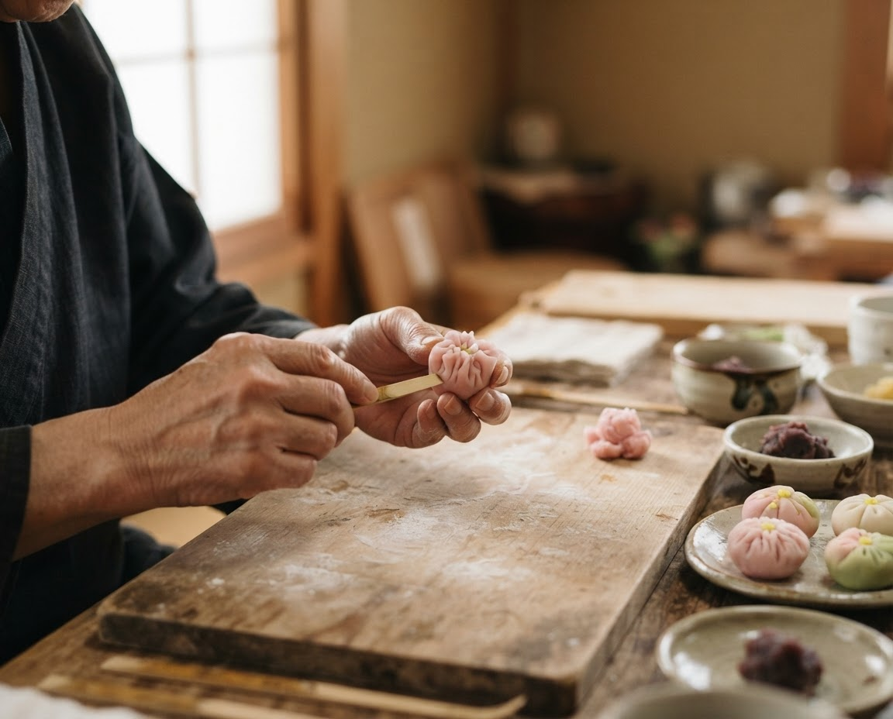
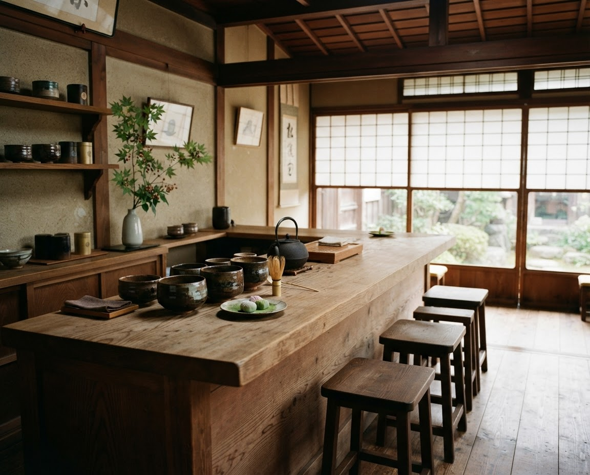

宇治抹茶
Uji Matcha
豊かな香りと、まろやかな旨みを楽しむ上質な抹茶。
¥1,620（税込）→
JAPANESE TEA & WAGASHI
丁寧に点てたお茶と、季節のうつろいを映す和菓子。
日々の暮らしに、心安らぐひとときをお届けします。
A Moment of Calm in Every Cup.
季
節
を
味
わ
う

THE ART OF JAPANESE TEA
一杯のお茶を味わうこと。
季節の和菓子を楽しむこと。
KOKOROは、日本の四季と職人の手仕事を大切にしながら、
心に余白を生むひとときをお届けします。

OUR SELECTION
素材の味わいと、職人の手仕事。
KOKOROが大切に選んだ、日々を彩るひと品をご紹介します。

Uji Matcha
豊かな香りと、まろやかな旨みを楽しむ上質な抹茶。
¥1,620（税込）→

Seasonal Nerikiri
四季折々の草花をかたどった、彩り豊かな上生菓子。
¥480（税込）→

Roasted Hojicha
香ばしい香りとやさしい余韻が広がる、くつろぎの一杯。
¥1,080（税込）→

Handcrafted Dorayaki
ふっくらと焼き上げた生地に、風味豊かな小豆あんを挟みました。
¥360（税込）→
OUR PHILOSOPHY
01QUALITY INGREDIENTS
お茶本来の香りと味わいを大切にし、素材の魅力を丁寧に引き出します。
02SEASONAL BEAUTY
移りゆく四季の美しさを、色や形、味わいを通して表現します。
03CRAFTSMANSHIP
細やかな技と心配りを重ね、日本の食文化の魅力を伝えます。

THE TEA EXPERIENCE
お茶の香り、和菓子の繊細な甘み、
器に触れる手のぬくもり。
それぞれの美しさが重なり合うことで、
何気ない時間が、心に残るひとときへと変わります。
SEASONAL COLLECTION
四季の移ろいとともに変わる、KOKOROの季節の便り。

AUTUMN COLLECTION
秋色に染まる景色や実りの季節から着想を得た、
今だけの和菓子をご紹介します。
季節の商品は、時期によって内容が変わります。

OUR STORY
日本には、自然の恵みや季節の変化を楽しみ、
日々の暮らしの中に美しさを見つける文化があります。
KOKOROは、お茶と和菓子を通して、
その豊かな感性を今の暮らしへとつないでいきます。
NEWS & JOURNAL
秋の和菓子コレクションのご案内
→秋に楽しむ、香ばしいほうじ茶の魅力
→和菓子に映る、日本の四季
→VISIT OUR SHOP
お茶の香りに包まれながら、
ゆっくりと流れる時間をお楽しみください。
※ 店舗情報はコンセプト用の仮情報です。
